Booksy
Forte: o marketplace traz cliente novo.
Falha: mais um app e mais uma conta para o cliente. Para salão de bairro, que vive de cliente fixo, pesa mais do que ajuda.
Agendamento para salão, barbearia e estética. O cliente marca sozinho, sem criar conta, e o dono organiza a agenda arrastando horários e vê quanto faturou, quantos clientes faltaram e quais horários lotam.
O dono atende pelo WhatsApp, perde horário, esquece de confirmar e não sabe quanto faturou no mês.
Link de agendamento sem cadastro para o cliente e um painel em que o dono arrasta horários para remarcar e vê faturamento, faltas e horários mais cheios.
Duas interfaces navegáveis com 14 telas, design system com 8 componentes, benchmark de 5 produtos e avaliação heurística com 7 problemas encontrados e 6 corrigidos.

Em salão, barbearia e estética pequenos, o agendamento acontece pelo WhatsApp. O dono, que muitas vezes também atende, responde entre um cliente e outro e anota numa agenda de papel. Resultado:
Cinco produtos reais, analisados pelos sites oficiais, lojas de apps e matérias, em outubro de 2026. Onde não encontrei a informação, escrevi "não encontrei".
| Funcionalidade | Booksy | Trinks | AppBarber | Fresha | Google Agenda |
|---|---|---|---|---|---|
| O que é | Marketplace e agenda de beleza | Gestão brasileira para salões | Gestão e agendamento para barbearias | Agendamento e marketplace de beleza | Agenda pessoal com página de agendamento |
| Cliente agenda sozinho | Sim, app e marketplace | Sim, online e pelo Google Maps | Sim, app e painel web | Sim, app e marketplace | Sim, por link |
| Lembrete | Sim | Sim, SMS | Sim, mensagens de retorno | Sim | Sim, e-mail |
| Agenda por profissional | Sim | Sim | Sim | Sim | Não é o foco |
| Financeiro | Relatórios | Caixa, despesas, comissões, estoque | Caixa, pacotes, estoque | Pagamentos e relatórios | Não |
| Ficha do cliente | Sim | Sim | Sim | Sim | Não |
| Foco no Brasil | Não | Sim | Sim | Não | Não |
Forte: o marketplace traz cliente novo.
Falha: mais um app e mais uma conta para o cliente. Para salão de bairro, que vive de cliente fixo, pesa mais do que ajuda.
Forte: gestão completa pensada para o Brasil e agendamento pelo Google Maps.
Falha: a agenda, que o dono abre o dia todo, divide espaço com módulos que ele usa uma vez por mês.
Forte: app próprio da barbearia, com fidelidade, pacotes e lista de espera.
Falha: voltado a barbearia. Serviço longo de salão, como coloração de 2 horas, pede outra lógica de encaixe.
Forte: entrada gratuita e fluxo do cliente muito curto.
Falha: o custo está nas taxas, o que exige atenção de quem começa. Produto global: o hábito de confirmar pelo WhatsApp não é o centro.
Forte: todo mundo já tem e a página de agendamento é grátis.
Falha: não sabe o que é serviço, profissional ou falta. Não dá números do negócio.
| Observação | Decisão no Agendaí |
|---|---|
| Cliente de salão de bairro não quer mais uma conta (Booksy, Fresha) | Agendamento sem cadastro: nome e WhatsApp só no último passo |
| A agenda divide espaço com módulos raros (Trinks, AppBarber) | A agenda é a tela inicial do painel; o resto fica em quatro itens de menu |
| WhatsApp é o canal real no Brasil | Confirmação e lembrete pelo WhatsApp, com status "aguardando confirmação" |
| Remarcar costuma ser formulário | Arrastar para remarcar, com Desfazer e um caminho pelo teclado |
| Números escondidos em relatórios | Uma tela com faturamento, faltas e horários mais cheios |
| O Google Agenda não sabe o que é serviço | Serviço tem duração e preço; só aparece horário onde o serviço cabe |
Grade com colunas, linha do "agora" e altura do bloco pela duração.
No Agendaí: a agenda do painel, com uma coluna por profissional.
Passo a passo curto com resumo antes de confirmar.
No Agendaí: 4 passos e resumo no final.
Dias numa faixa horizontal e horários em chips.
No Agendaí: escolha de data e hora no app.
Creme, terracota e verde escuro.
No Agendaí: paleta clara e acolhedora, sem cara de banco.
Hipótese
Duas proto-personas montadas a partir do benchmark e do meu entendimento do problema. Não entrevistei donos nem clientes ainda; validar isso é o primeiro objetivo do roteiro de teste. A principal é o dono: é quem paga e quem mais sofre com o problema.
Dona de um salão e barbearia com quatro profissionais na Asa Sul. Também atende. Agenda de papel no balcão e WhatsApp no bolso.
Corta cabelo e faz a barba a cada três semanas, no fim da tarde. Não gosta de ligar nem de esperar resposta.
O cliente tem três abas e um fluxo de quatro passos. O painel tem cinco itens de menu e abre direto na agenda, porque é a tela que o dono usa o dia inteiro.
Seis telas do app e três do painel, em cinza. Algumas decisões que saíram daqui:
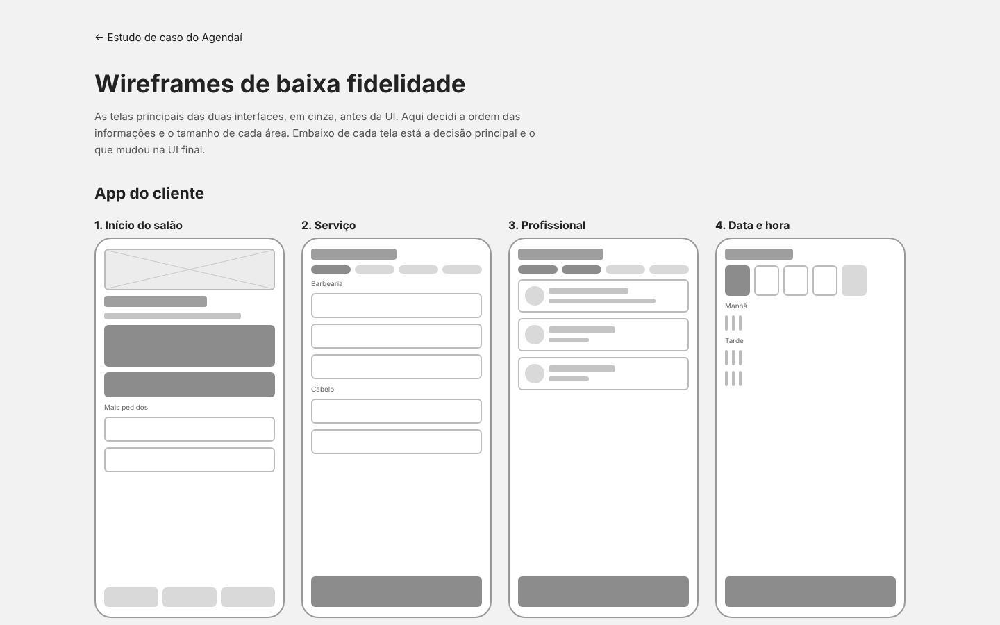
Fundo creme em vez de branco puro, para a tela parecer de salão e não de banco. Verde-petróleo nas ações: passa calma e confiança e serve tanto para salão feminino quanto para barbearia. Coral só como detalhe (linha do "agora", capa do salão), porque não tem contraste para texto. Cada profissional tem uma cor na agenda, sempre como borda forte e fundo claro.
#FBF8F4#1F5F5B#E07A5F#147A4B#8A5A00#B42318Uma família só, Plus Jakarta Sans: arredondada o bastante para o tom acolhedor, com números firmes para preço, horário e faturamento. Números com largura fixa para alinhar na agenda e nas tabelas.
No app, o card inteiro de serviço e profissional é o alvo de toque.
Agrupados em manhã, tarde e noite. Mostrar os ocupados poluiria sem ajudar.
A célula de destino fica verde ou vermelha antes de soltar, com o motivo escrito.
Mudanças reversíveis vêm com Desfazer por 7 segundos. Modal só para cancelar.
Tokens e componentes, com todos os estados, no design system.
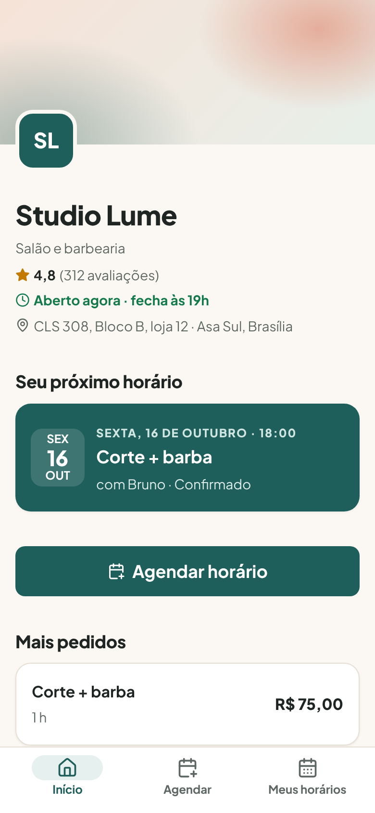
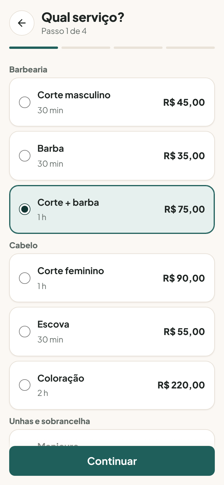
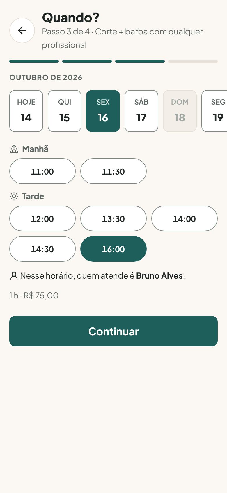
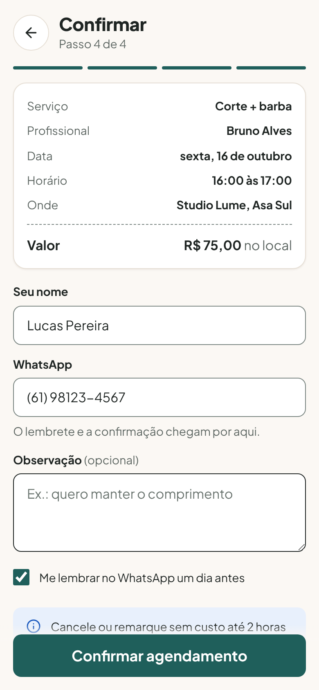
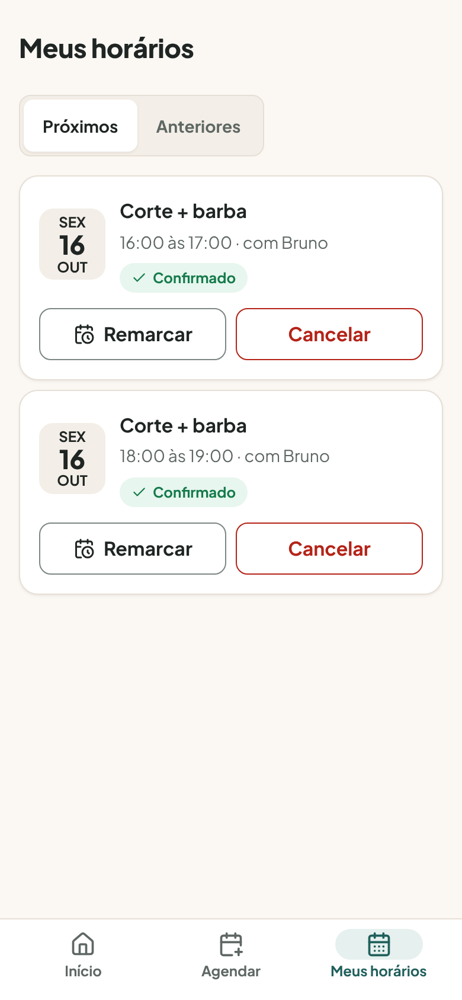
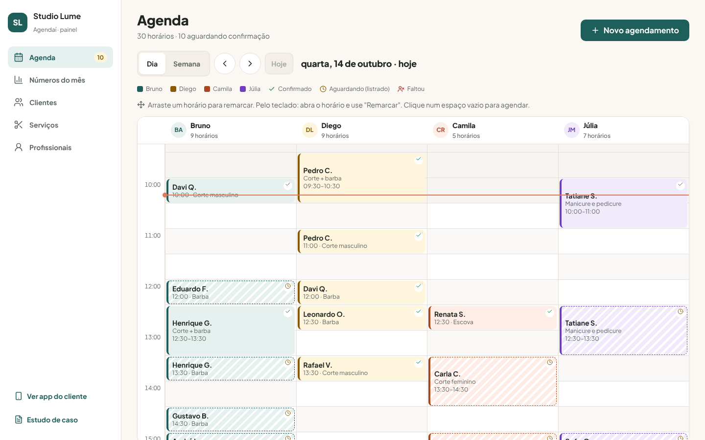
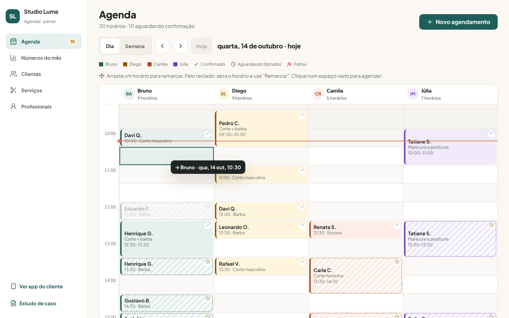
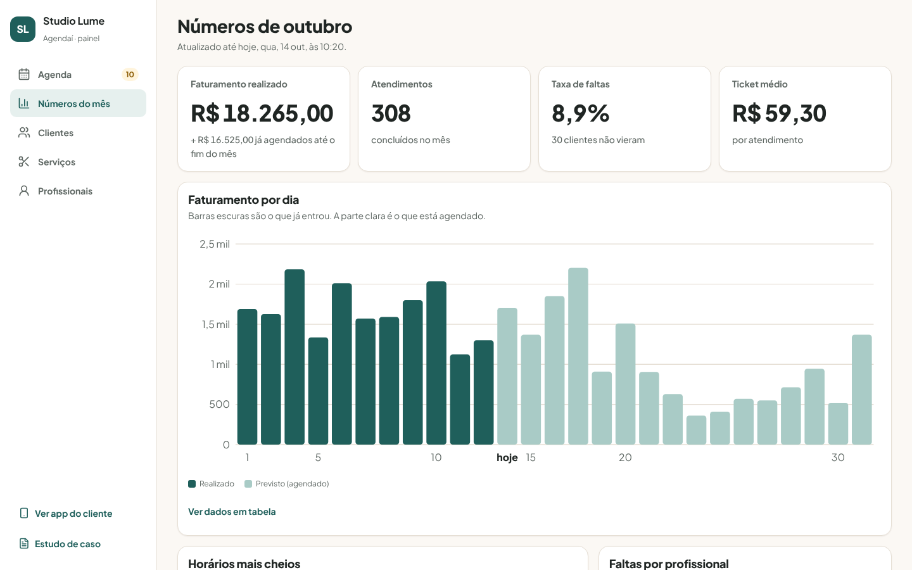
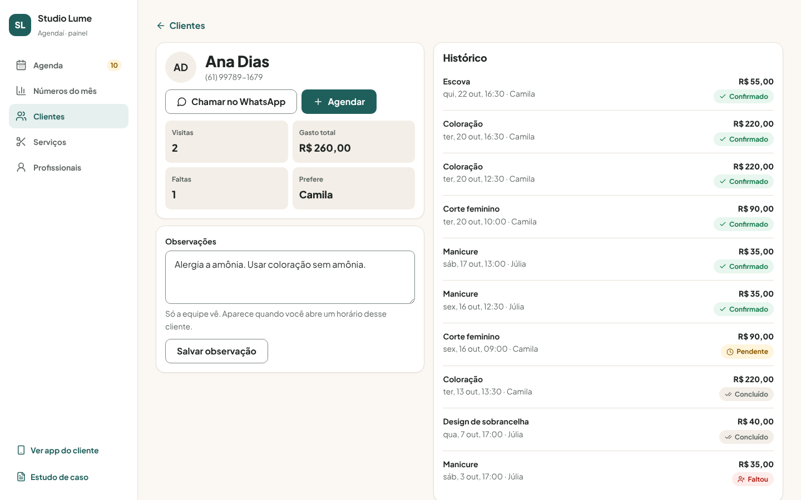
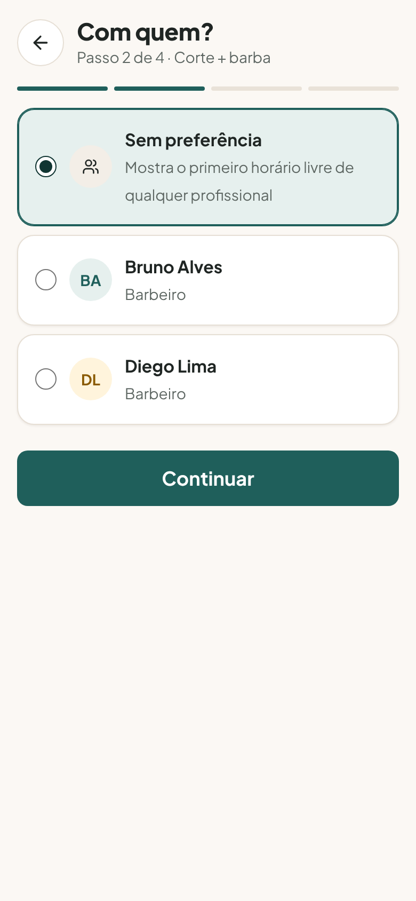
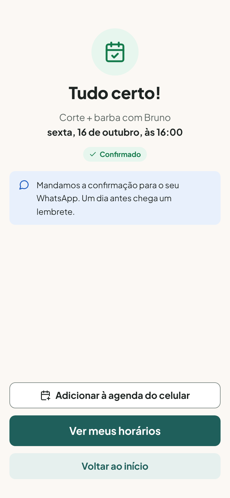
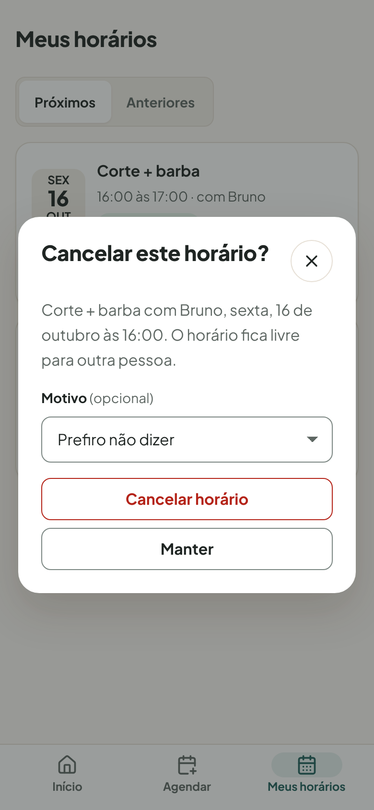
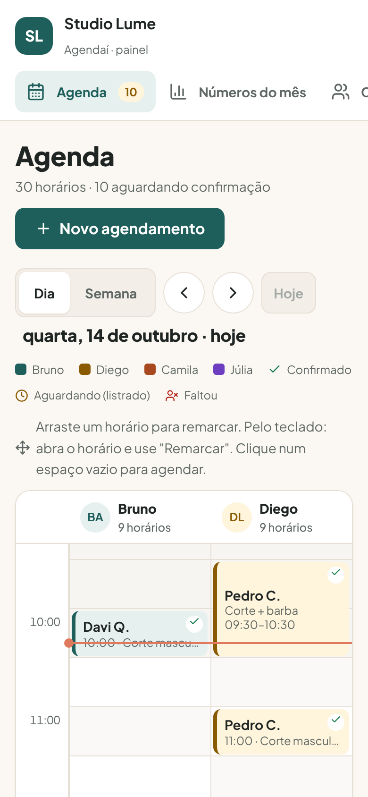
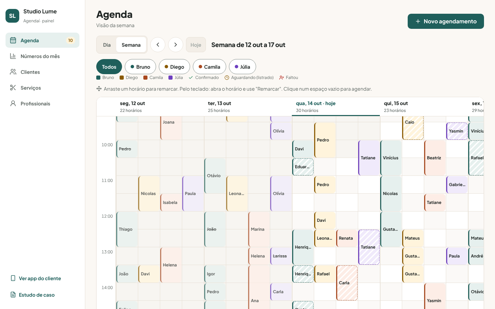
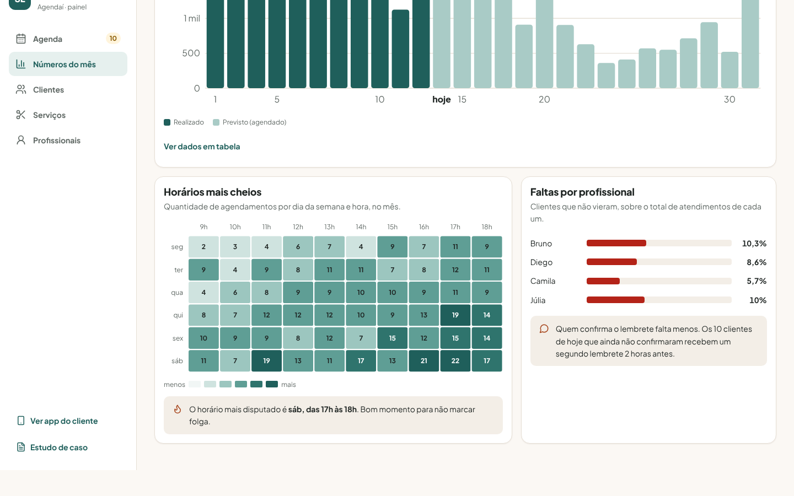
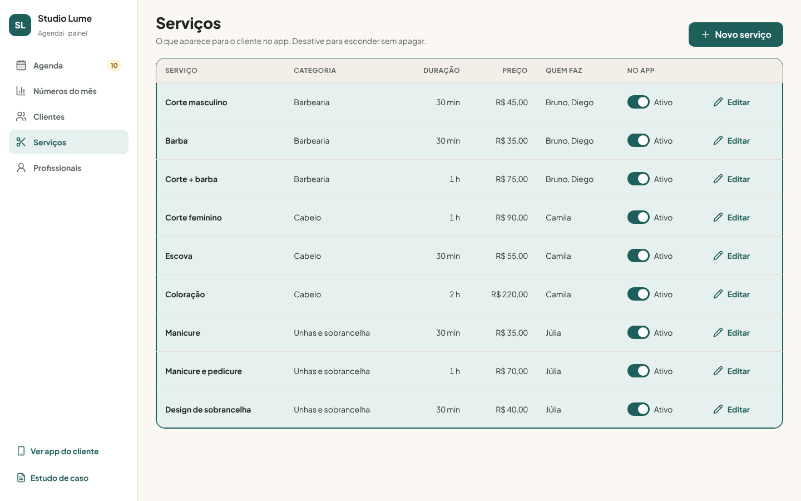
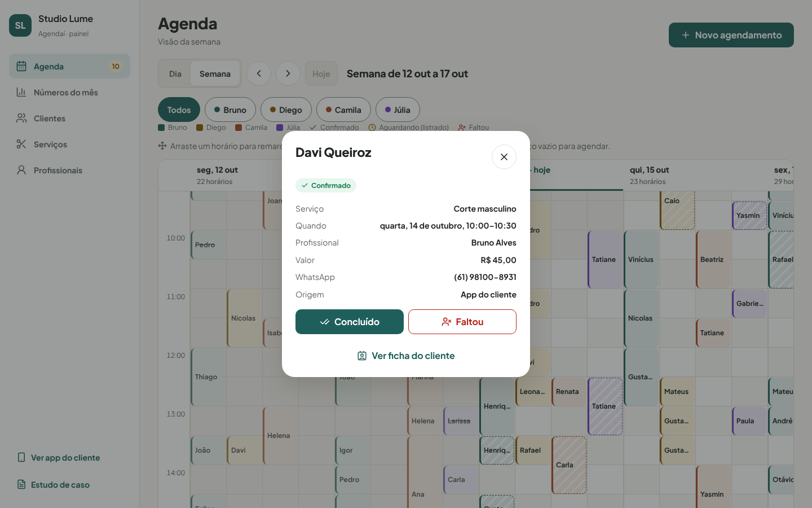
Contraste calculado para cada par de cores usado, com a fórmula da WCAG 2.1. Todos passam no nível AA.
| Par | Razão | Mínimo AA | Resultado |
|---|---|---|---|
Texto #1F2523 sobre fundo #FBF8F4 | 14,72:1 | 4,5:1 | Passa |
Texto secundário #5E6763 sobre fundo | 5,52:1 | 4,5:1 | Passa |
Placeholder #6B7570 sobre branco | 4,77:1 | 4,5:1 | Passa |
Branco sobre botão #1F5F5B | 7,38:1 | 4,5:1 | Passa |
Confirmado #147A4B sobre #E7F6EE | 4,81:1 | 4,5:1 | Passa |
Aguardando #8A5A00 sobre #FFF4DC | 5,43:1 | 4,5:1 | Passa |
Erro #B42318 sobre branco | 6,57:1 | 4,5:1 | Passa |
| Texto escuro sobre fundos dos profissionais | 13,26:1 a 14,27:1 | 4,5:1 | Passa |
Borda de campo #7C8783 sobre branco | 3,72:1 | 3:1 (não texto) | Passa |
Anel de foco #1D5BBF sobre fundo | 6,01:1 | 3:1 (não texto) | Passa |
Com as duas interfaces prontas, passei por todas as telas com as 10 heurísticas de Nielsen. Avaliei sozinho: serve para pegar os problemas óbvios antes do teste com usuários. Gravidade de 0 a 4.
| Heurística | O que encontrei | Grav. | O que fiz |
|---|---|---|---|
| 1. Visibilidade do status | Com "Sem preferência", o cliente escolhia o horário sem saber quem ia atender. | 1 | "Nesse horário, quem atende é Diego Lima" aparece ao escolher. |
| 2. Mundo real | Termos conferidos: "aguardando confirmação", "faltou", "remarcar", "ticket médio". | 0 | Nada a corrigir. |
| 3. Controle e liberdade | "Concluído" ou "Faltou" marcado por engano só saía pelo toast de 7 segundos. | 2 | Botão "Marquei errado" no detalhe. |
| 4. Consistência | Menu dizia "Agenda 19" (pendentes dos próximos dias) e o cabeçalho "10 aguardando" (só hoje). | 2 | Os dois contam só os de hoje. |
| 5. Prevenção de erros | Dava para marcar para daqui a 1 hora sem aviso e, logo depois, o app dizia que não dava mais para mudar. | 2 | Aviso da regra de 2 horas antes de confirmar. |
| 6. Reconhecer, não lembrar | O detalhe do horário já mostra a observação da ficha (ex.: alergia). | 0 | Nada a corrigir. |
| 7. Eficiência | Para ver um dia daqui a três semanas, só clicando "próximo" várias vezes. | 1 | Foi para os próximos passos. |
| 8. Minimalismo | Semana com todos os profissionais: blocos de 46px viravam "Pe…" e "10:…". | 2 | Só o primeiro nome, coluna mínima de 64px e rótulo completo. |
| 9. Recuperar de erros | Arrastar para destino inválido já mostra o motivo antes de soltar. | 0 | Nada a corrigir. |
| 10. Ajuda | A dica de arrastar ficava embaixo da grade, fora da tela num notebook. | 1 | Subi a dica para cima da grade. |
Sete achados, seis corrigidos. Os de gravidade 2 eram de controle e consistência: o tipo de coisa que faz o dono desconfiar do sistema e voltar para o papel.
Próximo passo, ainda não realizado
5 donos ou gerentes de salão que agendam pelo WhatsApp (40 min, no próprio salão) e 5 clientes que vão a salão todo mês (20 min, remoto, no celular deles).
| Quem | Tarefa | Sucesso quando |
|---|---|---|
| Cliente | "Marque um corte + barba para sexta à tarde, com qualquer barbeiro." | Chega em "Tudo certo!" |
| Cliente | "Você não vai conseguir ir. Mude para outro dia da semana que vem." | Remarca sem cancelar e criar outro |
| Dono | "O cliente das 13:30 do Diego pediu para passar para o fim da tarde." | Remarca para um horário livre |
| Dono | "A cliente que está com a Júlia agora já foi atendida. Registre." | Marca como concluído |
| Dono | "Quanto o salão já faturou este mês? E quanto já está agendado?" | Lê os dois valores |
| Dono | "Qual é o horário mais cheio da semana?" | Encontra no mapa de calor |
Métricas: sucesso e tempo por tarefa, quantos donos descobrem o arrastar sem ler a dica, erros, SEQ e SUS.
Roteiro completo em docs/06-roteiro-de-teste.md (abre no GitHub).
Se o Agendaí fosse lançado, estes seriam os números que eu acompanharia. Nenhum deles existe ainda; são as metas que eu definiria.
| Métrica | Por que importa | Meta inicial |
|---|---|---|
| Agendamentos que chegam pelo link, e não pelo WhatsApp | Mostra se o cliente aceitou marcar sozinho | Metade em 3 meses |
| Taxa de faltas antes e depois do lembrete | É a dor que mais custa dinheiro ao dono; o painel já mede | Cair pela metade |
| Tempo para remarcar um horário | Valida o arrastar contra o formulário | Menos de 10 segundos |
| Mensagens de agendamento por dia no WhatsApp do salão | Se o produto funciona, o dono conversa menos | Cair pela metade |
| Donos que abrem "Números do mês" ao menos uma vez por semana | Diz se a visão do negócio é útil de verdade | Acima de 50% |